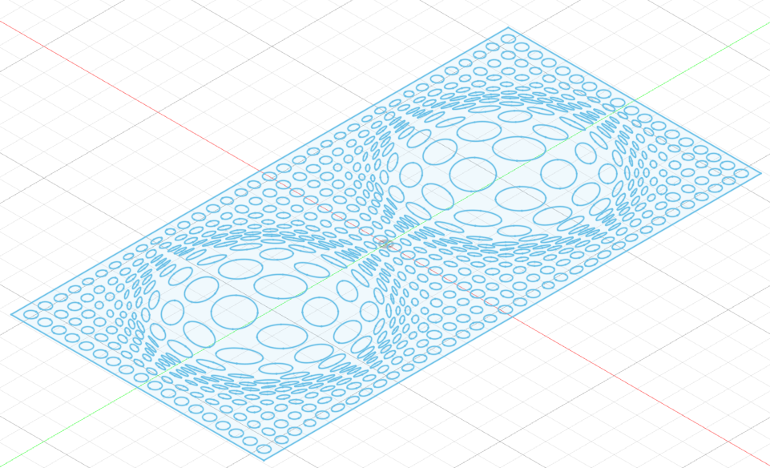
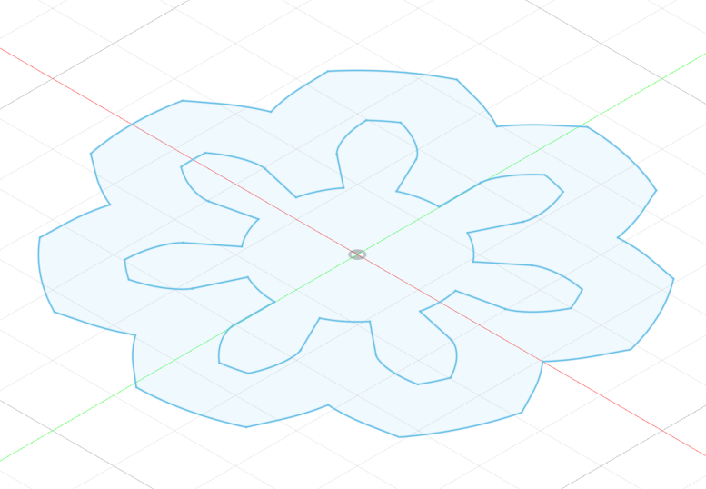

# designing and milling
# ---------------------------------
in lab, we created a very cool mold of the state of massachussetts. we cast it with plaster and kassia used paint to give the plaster a marbled effect.

at first, i wanted to recreate kassia's idea with the map of my country (india) or my state (maharashtra) but the vectors of the maps had far too many details and ended up making both kassia's and my computers crash. next idea -- i wanted to try to mill a potential design for the flap for my folding board for my final project. i wanted the flap to have holes in it to make it lighter so i would need less torque to turn it. also, i wanted the holes to have an interesting pattern. here is the dxf file of the pattern that i tried to cnc mill.

my idea was to mill this pattern and then vacuum form it to create a mold. then, using resin or a composite or some other light-weight casting substance, i could create the flaps for my folding board. however, for some reason, shopbot was not able to handle the pattern and the mill kept failing. so i decided to revert to something more simple for this week's assignment.
i decided to create a forget-me-not flower but with a more mechanistic touch to it. i designed a simple gear that looked like a flower and then was able to successfully mill it using shopbot. here is the dxf file of what i ended up milling.

i was quite happy with the way the cnc milling turned out but did not expect it to be so rough.

i made the gear-flower look smoother using the sanding belt and some finer sandpaper.

# molding and casting
# ---------------------------------
next, i wanted to vacuum form my design so i could make a mold of the gear. during lab, we had used the big vacuum former to make the massachussetts design. so i thought i would use the smaller one. it was also more appropriate given the size of my piece of wood.

perhaps i let the plastic get too hot before turning the vacuum on because the plastic seemed to incredibly stuck to my piece of wood. i had to pry it off using a variety of tools.

instead of plastic, i wanted to cast my gear-flower with a substance that would be soft and squishy instead of hard and brittle. in the cabinet, i found some two bottles of silicone rubber that promised to turn into a soft mold when mixed in equal parts and left to cure for six hours.

i came back the next day and my mold had cured! it was incredibly cute and fun to play with. also, surprisingly, the small air gap created between the center of the base and the edges of the base led to the creation of a fun vacuum seal when the mold was plopped onto the table. it could not be picked up unless peeled from the edges.